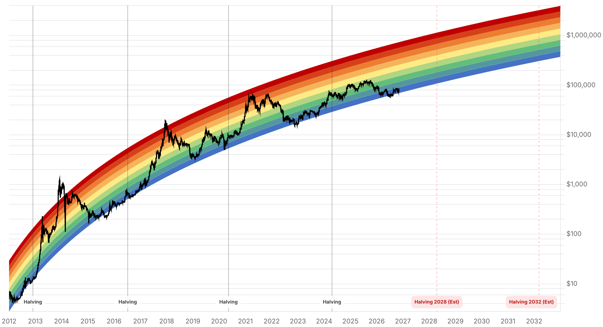

Reporte financiero
BTC cotiza en vivo a USD 73.901,99 (07:27 UTC, -1,10% intradía vs. cierre previo de USD 74.719,82), rompiendo la planicie de tres días en la franja USD 75.700-75.900 que se reportó ayer: el cierre del domingo (8 nov) ya marcó USD 74.584,65 y hoy continúa la caída hasta un mínimo intradía de USD 73.869,39 -el nivel más bajo desde agosto-. Lo más relevante que cambió desde el reporte de ayer es que el precio perforó el costo base de los tenedores de corto plazo (~USD 75.700 según Glassnode, citado por BeInCrypto/Yahoo Finance la noche del domingo): la mayoría de los compradores recientes (desde fines de octubre) está ahora en pérdida no realizada, lo que históricamente añade presión de venta de pánico si el precio no logra reconquistar ese nivel. También es nuevo desde ayer: el Departamento del Tesoro de EE.UU. (vía FinCEN, 'Operation Economic Outcast') cortó el 6 de noviembre el acceso del exchange MEXC Global al sistema financiero estadounidense, alegando al menos USD 16.000M en flujos ilícitos entre 2021 y 2026 -incluyendo evasión de sanciones rusas y transacciones vinculadas al Banco Central de Irán y la Guardia Revolucionaria-; no es una sanción OFAC formal sobre MEXC, pero corta el acceso de instituciones financieras de EE.UU. a transferencias con ese exchange, y se suma al deterioro de confianza en exchanges tras el hackeo de Binance de octubre, ya conocido. Las liquidaciones en cripto se mantuvieron elevadas durante el fin de semana y esta madrugada: CoinGlass registró entre USD 856M (domingo por la noche) y USD 1.040M (06:01 UTC de hoy) en liquidaciones de 24 horas, con una proporción desproporcionada de posiciones largas (90-92% del total), señal de que el mercado seguía posicionado al alza antes de la caída. No hay dato nuevo de flujos de ETFs (fin de semana sin sesión en EE.UU.): el acumulado de noviembre se mantiene en -USD 1.280-1.300M en 5 sesiones hasta el 6 de noviembre, sin cambio frente a lo reportado ayer. El Fear & Greed Index subió apenas de 28 a 29 (sigue en 'Fear'), un movimiento marginal que no refleja la aceleración de la caída de precio de las últimas 24 horas -el sentimiento todavía no capturó del todo el nuevo tramo bajista-. Sin novedades verificadas desde ayer en: la probabilidad de suba de tasas de la Fed en diciembre (76,8-78% según CME FedWatch/Reuters, el IPC de octubre del martes 10 de noviembre sigue siendo el catalizador pendiente), la revisión de MSCI sobre Strategy (sigue fijada para el 11 de noviembre, ahora a solo 2 días), la Clarity Act, la vulnerabilidad de BTCPay Server, la apelación del Reino Unido sobre los 61.000 BTC y Cantor Fitzgerald. La apertura bursátil de Wall Street del lunes -la pregunta pendiente de ayer sobre si la correlación BTC-Nasdaq se reafirma- todavía no ocurrió al momento de este reporte (mercados de EE.UU. abren varias horas después de las 07:27 UTC).
Tras tres días prácticamente planos en USD 75.700-75.900 (reportado ayer), el precio cerró el domingo 8 de noviembre en USD 74.584,65 y continuó cayendo hoy hasta un mínimo intradía de USD 73.869,39, cotizando en vivo a USD 73.901,99 (07:27 UTC, -1,10% vs. cierre previo). Es el nivel más bajo desde agosto. Según datos de Glassnode citados por BeInCrypto/Yahoo Finance (domingo 8 nov, 17:36 hora central de EE.UU.), el precio ya perforó el costo base de los tenedores de corto plazo (short-term holder cost basis), estimado en ~USD 75.700 -la mayoría de quienes compraron BTC en las últimas semanas está ahora en pérdida no realizada en el papel. Históricamente, cuando este nivel no se reconquista rápido, la presión de venta de compradores recientes tiende a acentuarse, dificultando una recuperación. El mismo análisis marca USD 70.000 como el próximo soporte relevante si la zona USD 75.700-77.000 no se recupera pronto.
El 6 de noviembre, FinCEN (oficina del Tesoro) emitió una orden bajo 'Operation Economic Outcast' que prohíbe a instituciones financieras de EE.UU. procesar transferencias vinculadas al exchange MEXC Global, alegando que facilitó al menos USD 16.000M en transacciones sospechosas entre mayo de 2021 y mayo de 2026 -incluyendo cerca de USD 1.500M en evasión de sanciones rusas, ~USD 22M vinculados al Banco Central de Irán y la Guardia Revolucionaria, y procesamiento de fondos del exchange sancionado Garantex/Grinex hasta junio de 2026-. Confirmado por múltiples fuentes independientes (comunicado oficial de FinCEN/Treasury, Decrypt, Cointelegraph, mlex.com). No es una designación OFAC/SDN sobre MEXC (no implica un bloqueo global automático), pero sí corta el acceso de contrapartes estadounidenses una vez vigente la orden. Se suma, como telón de fondo de deterioro de confianza en exchanges cripto, al hackeo de Binance de fines de octubre (~USD 6.300M, ya conocido en reportes anteriores) -ninguno de los dos eventos es nuevo en sí mismo hoy salvo la acción de FinCEN, pero juntos refuerzan la narrativa de riesgo de contraparte que coincide con la caída de precio de este fin de semana.
CoinGlass registró liquidaciones de entre USD 856M (domingo 8 nov por la noche, más de 140.000 traders, 90,2% en largos) y USD 1.040M (06:01 UTC de hoy 9 nov, 155.187 traders liquidados) en ventanas de 24 horas. Binance concentró el 49,1% del total de liquidaciones y Ethereum lideró por activo individual con USD 455,37M (91,9% en largos). La proporción desproporcionada de liquidaciones largas (90-92%) indica que el mercado seguía posicionado al alza -apostando a una recuperación- justo antes de que el precio rompiera la planicie de tres días, lo que amplificó la caída.
No hubo sesión de ETFs spot de Bitcoin en EE.UU. durante el fin de semana (7-8 de noviembre), por lo que el acumulado de noviembre se mantiene en -USD 1.280-1.300M en 5 sesiones hasta el 6 de noviembre (1 de entrada, 4 de salida), sin novedad frente a lo ya reportado ayer. La probabilidad de suba de tasas de la Fed en diciembre sigue en 76,8-78% (CME FedWatch/Reuters), con el IPC de octubre del martes 10 de noviembre como catalizador todavía pendiente. La revisión de MSCI sobre la elegibilidad de Strategy sigue fijada para el 11 de noviembre (ahora a solo 2 días), sin información adicional a la ya confirmada ayer sobre el mecanismo de exclusión gradual. Tampoco hay desarrollos nuevos en la Clarity Act (estancada desde septiembre), la vulnerabilidad de BTCPay Server, la apelación del Reino Unido sobre los 61.000 BTC, ni la respuesta de Cantor Fitzgerald al senador Blumenthal. La apertura bursátil de Wall Street del lunes -clave para confirmar o descartar la correlación BTC-Nasdaq señalada ayer- todavía no ocurrió al momento de este reporte.
| Periodo | Valor |
|---|---|
| 3 nov | 77345.05 |
| 4 nov | 80405.29 |
| 5 nov | 75942.13 |
| 6 nov | 75746.93 |
| 7 nov | 75747.58 |
| 8 nov | 74584.65 |
| 9 nov (en vivo) | 73901.99 |
| Periodo | Valor |
|---|---|
| Hoy | 29 |

“Bitcoin is currently oversold and should bounce.”
“As the likelihood of a Democratic sweep grew, clients shifted from buying calls to buying puts.”
El nivel inmediato a vigilar es el costo base de los tenedores de corto plazo (~USD 75.700, Glassnode): reconquistarlo en las próximas 24-48 horas sería la señal más clara de que la caída del fin de semana fue un sacudón de corto plazo, no el inicio de un tramo bajista mayor; no hacerlo abre la puerta a un test de USD 70.000. Los dos catalizadores inmediatos siguen siendo el IPC de octubre (martes 10 de noviembre) y la apertura bursátil de Wall Street del lunes -todavía no ocurrida al momento de este reporte-, que determinará si la correlación BTC-Nasdaq se reafirma tras el fin de semana negativo en cripto.
La acción de FinCEN contra MEXC se suma al hackeo de Binance de octubre como fuente de deterioro de confianza en exchanges, un riesgo de contraparte que se superpone (sin ser necesariamente la causa directa) a la caída de precio del fin de semana. La revisión de MSCI sobre Strategy (11 de noviembre, en 2 días) y la probabilidad ya corroborada de suba de tasas de la Fed en diciembre (~77-78%) siguen siendo los otros dos riesgos macro/estructurales a monitorear esta semana. El streak de salidas de ETFs (-USD 1.280-1.300M en noviembre) continúa siendo la señal de desinversión institucional más relevante, pendiente de actualizarse cuando reabran los mercados el lunes.
Sin cambios en los objetivos de precio de largo plazo ya reportados en ediciones anteriores (Citigroup, Bernstein, Standard Chartered, Tom Lee, NYDIG, Armstrong, piso de costo de producción de JPMorgan en USD 94.000 -ahora por encima del precio spot). BTC sigue muy por debajo de su máximo de 52 semanas de USD 107.428, y la ruptura del costo base de corto plazo de hoy añade un argumento técnico adicional a la tesis de que el ciclo actual está en una fase de corrección más profunda de lo que sugería la planicie de los últimos días.
Es el nivel técnico más relevante que cambió desde ayer: con la mayoría de compradores recientes ya en pérdida no realizada, una reconquista rápida de esta zona sería la señal más clara de que la caída del fin de semana no escala; de lo contrario, USD 70.000 se vuelve el próximo soporte relevante a vigilar.
La acción del Tesoro afecta la capacidad de MEXC de operar con contrapartes estadounidenses, no la oferta o demanda de Bitcoin en sí. Tratarlo como un catalizador de venta directo sería una lectura apresurada; es más relevante como parte del deterioro acumulado de confianza en exchanges (junto al hackeo de Binance de octubre) que como explicación de la caída de precio del fin de semana.
Con liquidaciones concentradas en posiciones largas (90%+) durante el fin de semana, el mercado estaba posicionado para una recuperación que no llegó. La apertura bursátil del lunes y el dato de inflación del martes son los próximos puntos de datos duros; actuar sobre la ruptura del fin de semana sin esa confirmación sería prematuro.